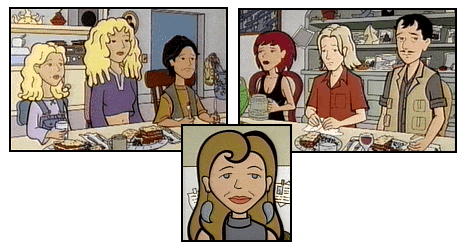

Top (from left): Courtney, Summer, Adrian, Penny, Wind, and Vincent
Bottom: Amanda
The other members of Jane and Trent's oft-spoken-about family are finally seen "in the flesh" in the episode "Lane Miserables" (#308), an episode that just might qualify them as Lawndale's Most Dysfunctional Family. Everyone is usually off doing their own thing -- even the parents -- leaving Jane and Trent to fend for themselves most of the time.
Amanda: Like Willow Yeager, Amanda is a flower child who never quite outgrew her Sixties "peace and love" idealism. (Who else but a hippie would give their children names like Wind and Summer, and saddle one of their children with the bad pun name of "Penny Lane"?) Her approach to parenting is decidedly hands-off, which has had a very definite affect on her children; only Jane seems to have escaped any real damage. Her only previous appearance was in "Arts 'N Crass" (#201), a non-speaking appearance where all we saw of her was her legs and bare feet. Amanda would next appear in "Art Burn" (#507), along with Vincent and Wind.
Vincent: The patriarch of the Lane family is apparently an avid photographer. Overall, though, he's something of a self-absorbed, blank slate who seems to share Amanda's hands-off approach to parenting, and whose ideas for marriage counseling come from the pop-psychiatry assembly line. He was first mentioned in The Daria Diaries. He would next appear in "Art Burn" (#507) along with Amanda and Wind. (The name "Vincent" was obtained from the Daria Trivia Contest on MTV's Daria page, and has been verified by independent sources, but it was never mentioned on the show.)
Penny: Disillusioned by the American Dream (and helped along in her disillusionment by Lawndale High's insanely intense P.E. teacher, Ms. Morris), Penny and her parrot Chiquito spend most of their time backpacking through Central and South America, making and selling hand-crafted items along the way. She is not and never has been married, if Summer's comment in "Lane Miserables" (#308) ("What do you know about marriage?") is any indication. This also seems to indicate that she's the youngest of the elder Lane siblings, falling between Wind and Trent. Penny was previously mentioned in "The Teachings of Don Jake" (#112) and "See Jane Run" (#211).
Wind: One thing you can say for the emotional and high-strung Wind: he's not a quitter, as his two failed marriages (with a third divorce in the making) would attest. His exact age is not known, but he would appear to fall between Penny and Summer, given that he's been married three times. Wind was first mentioned in "The Teachings of Don Jake" (#112), and would next be seen (along with Amanda and Vincent) in "Art Burn" (#507), bemoaning the destruction of the "naming gazebo."
Summer: Summer appears to be the eldest Lane sibling, judging by her four children (two of whom are Adrian and Courtney) and at least one failed marriage (re: Penny's comment, "I can't say I've had as much experience as [you and Wind] in failing at it," in "Lane Miserables" (#308)). She appears to be someone who has been worn down by the responsibility of raising her kids... all of whom seem to take every available opportunity to run away from home. Summer was previously mentioned in "Pinch Sitter" (#108) and "The Teachings of Don Jake" (#112).
Other Lane relatives were seen in "The Teachings of Don Jake" (#112), including an unnamed aunt, the straw hat-obsessed Aunt Bernice, the alcoholic Uncle Max, and their extremely old -- and extremely abrasive -- grandmother. Also mentioned (but not seen) were Aunt Ellie and their cousin Jimmy.
|